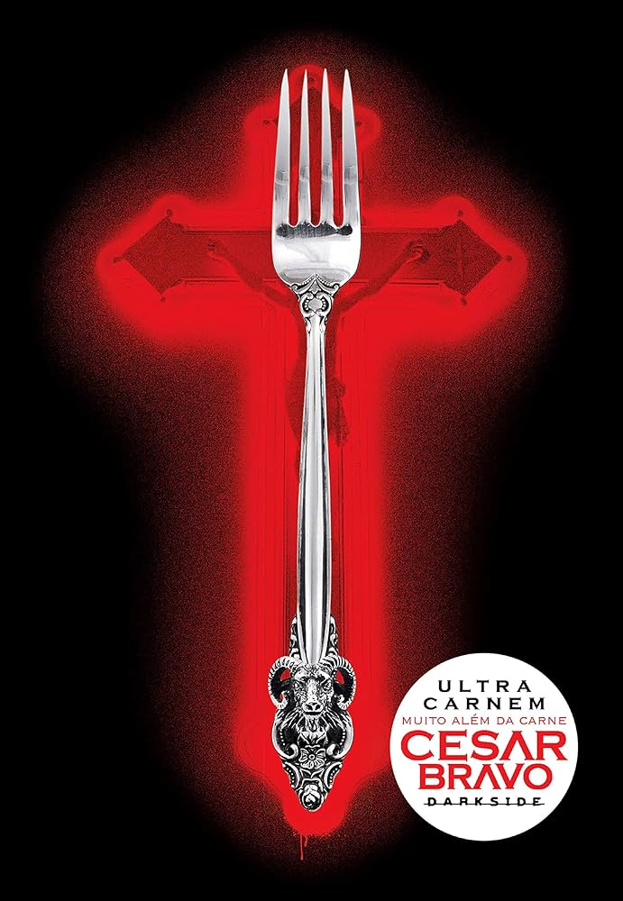

Blog do Diggo
"Um lugar para quem ama Livros, Histórias e uma Opinião duvidosa"
"Um lugar para quem ama Livros, Histórias e uma Opinião duvidosa"
Aqui você encontra resenhas, recomendações, curiosidades literárias e opiniões sobre livros de diversos gêneros. Se você ama leitura, está no lugar certo.
Uma resenha completa sobre o livro de Socorro Acioli e seus elementos de realismo fantástico.

Histórias que prendem do começo ao fim e vão te deixar sem conseguir parar de ler.

Confira adaptações famosas do mundo literário para o cinema.